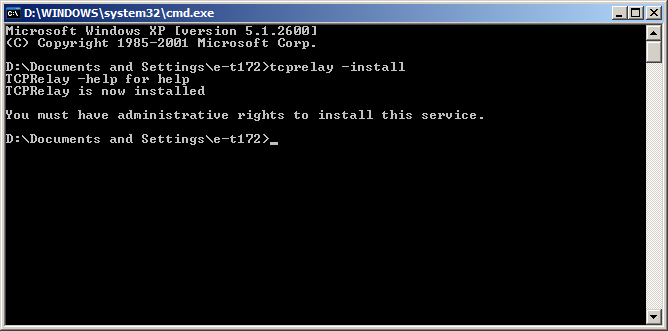
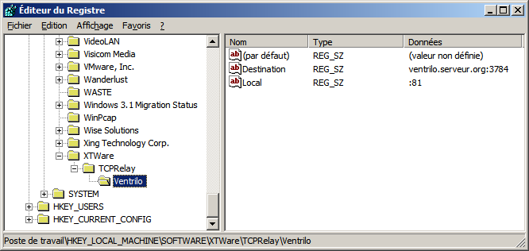
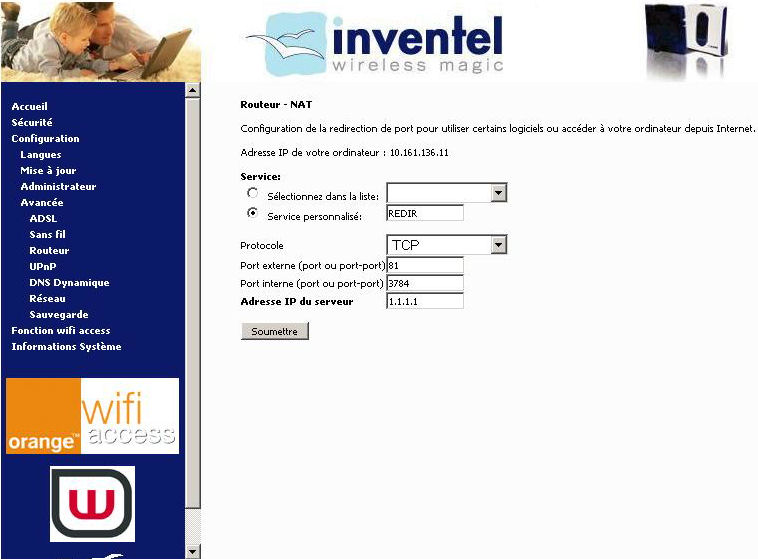
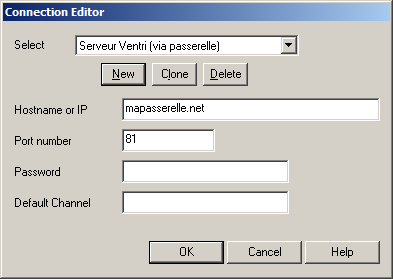

Certains Fournisseurs d'Accès à Internet (FAI), Free notamment, pratiquent ce que l'on appelle communément le "bridage de ports" : autrement dit, ils brident les communications Internet effectuées sur des ports particuliers. Ce bridage peut passer par une limitation du nombre de connexions simultanées, une limitation de bande passante sur les transferts de données réalisés sur le port en question, voire une interdiction de connexion pure et simple.
Ainsi, il est quasiment impossible à certains abonnés de Free de communiquer par voix en utilisant le logiciel Ventrilo. En effet, le port par défaut de la plupart des serveurs (3784) étant bridé par ce FAI, l'abonné malchanceux se retrouve avec un décalage de 30 secondes de communication dans les secondes suivant son arrivée sur le serveur.
Pourquoi ? Parce que Free ayant quelques problèmes de réseau, il préfère limiter la bande passante sur les ports supérieurs à 1024 pour que les applications les plus utilisées (Web, FTP, Mail...) soient prioritaires, au détriment de toutes les autres applications. Mais si cette limitation peut s'avérer judicieuse pour limiter les logiciels de Peer-To-Peer (eMule...) grands consommateurs de bande passante, il s'avère carrément injustifié et préjudiciable pour d'autres applications totalement inoffensives (ici, de la voix sur IP).
Fort heureusement, il est possible de mettre en oeuvre des solutions pour contourner ces limitations, c'est l'objet du présent tutoriel.
Le bridage de la connexion s'effectue au niveau des routeurs du FAI concerné : autrement dit, lorsque des paquets transitent au niveau de ses routeurs, ceux-ci vérifient le port de destination du paquet : si celui-ci fait partie de la liste de ports à brider, le routeur appliquera des restrictions sur le transit dudit paquet.
Prenons l'exemple de Ventrilo : vous envoyez des paquets sur le port 3784, les routeurs de votre FAI les détectent, et vous brident. Il nous faut donc communiquer avec le serveur en utilisant un autre port, qui lui ne sera pas bridé.
Mais, bien évidemment, tout n'est pas aussi simple : si on tente de communiquer avec le serveur Ventrilo sur le port 81 alors qu'il écoute le port 3784, ça ne fonctionnera pas (logique). La solution : utiliser un intermédiaire, une "passerelle" qui recevrait les paquets sur le port 81, et les renverrait au serveur sur le bon port, en se "faisant passer" pour vous, et qui vous retransmettrait les réponses.
Évidemment, cette passerelle se trouverait après les routeurs du FAI bridant, et non pas derrière (sinon ça ne servirait strictement à rien). Elle pourrait se trouver derrière un FAI concurrent, sur une machine hébergée en data center, ou, encore mieux, sur la machine abritant le serveur que vous essayez de contacter (en admettant que vous ayez un accès de type administrateur "root" dessus).
En termes plus techniques, on utilise en fait les mêmes technologies que celles employées sur les modems-routeurs grand public : un NAT (Network Address Translation), couplé à un Masquerading. Le NAT sert à rediriger les paquets reçus sur le port non bridé vers le "vrai" serveur, en modifiant l'adresse et le port de destination, et le Masquerading va modifier l'adresse et le port source de sorte que la passerelle "se fasse passer" pour vous.
Pourquoi la passerelle doit-elle se faire passer pour moi ? A priori, seul le NAT suffit, non ?
Non, pour deux raisons : la première est que la passerelle va tenter d'envoyer des paquets comportant une adresse source qui n'est pas la sienne, paquets qui seront donc rapidement jetés par les premiers routeurs par lesquels ils vont passer (parce que les routeurs sont configurés pour vérifier l'adresse source des paquets qu'ils routent, histoire d'éviter des attaques par spoofing) ; et même si ils arrivaient à passer, lorsque le "vrai" serveur enverra les réponses, votre ordinateur recevra des paquets dont l'adresse source ne correspond pas à celle de la passerelle (avec laquelle votre ordinateur "croit" avoir établi une connexion), et donc les ignorera.
Exemple détaillé
Nous allons prendre l'exemple d'un internaute abonné chez Free, ayant comme adresse IP 1.1.1.1, et souhaitant se connecter à un serveur Ventrilo d'adresse 2.2.2.2 écoutant sur le port 3784.
Situation classique (bridage effectif)
La machine 1.1.1.1 envoie des paquets à la machine 2.2.2.2 sur le port de destination 3784.
Les routeurs de Free interceptent les paquets, et brident la communication.
La machine 2.2.2.2 reçoit des paquets provenant de 1.1.1.1.
La machine 2.2.2.2 envoie des paquets à la machine 1.1.1.1 (réponses).
Les routeurs de Free ne brident pas la communication (vu qu'ils ne suivent pas l'état des connexions).
La machine 1.1.1.1 reçoit des paquets provenant de 2.2.2.2.
Avec une passerelle
Imaginons que nous avons installé une passerelle sur la machine 3.3.3.3, et l'avons configurée de manière à ce qu'elle redirige les paquets entrant sur le port 81 vers la machine 2.2.2.2, port 3784.
La machine 1.1.1.1 envoie des paquets à 3.3.3.3 sur le port 81.
Les routeurs de Free détectent un port de destination 81, et ne brident pas la communication.
La machine 3.3.3.3 reçoit des paquets de 1.1.1.1 sur le port de destination 81. Premièrement, elle modifie l'adresse de destination de ces paquets vers 2.2.2.2, port 3784 (NAT) ; deuxièmement, elle modifie l'adresse source des paquets en 3.3.3.3 pour passer les routeurs, et recevoir les réponses (Masquerading) ; troisièmement, elle renvoie les paquets ainsi modifiés sur le réseau.
La machine 2.2.2.2 reçoit des paquets provenant de 3.3.3.3.
La machine 2.2.2.2 envoie des paquets à 3.3.3.3 (réponses)
La machine 3.3.3.3 reçoit les paquets de 2.2.2.2. Premièrement, elle modifie l'adresse de destination de ces paquets en 1.1.1.1 ; deuxièmement, elle modifie l'adresse source des paquets en 3.3.3.3. Ces deux actions sont effectuées par le Masquerading.
Les routeurs de Free ne brident pas la communication.
La machine 1.1.1.1 reçoit des paquets provenant de 3.3.3.3.
Pour pouvoir mettre en pratique cette technique, il vous faut une passerelle. Plus cette passerelle sera géographiquement proche ("réseau-parlant") du "vrai" serveur, plus les pings seront bas. Il convient de noter que tous les transferts de données passeront par là, aussi, vous serez limité par sa bande passante.
La passerelle peut être de deux types :
Un ordinateur
Il faut juste qu'il soit connecté à Internet, et qu'il possède les outils nécessaires à l'établissement d'un NAT avec Masquerading.
La meilleure configuration possible consiste à installer la passerelle sur la même machine que celle qui héberge le "vrai" serveur, auquel cas elle se renvoie les paquets à elle-même, en modifiant uniquement le port de destination, sans déperdition de performances. Bien évidemment, cela suppose que vous ayez un accès de type administrateur sur cette machine. Ceci dit, la machine d'un ami abonné chez un FAI concurrent ne bridant pas peut très bien faire l'affaire, pour peu que celui-ci accepte de se faire pomper une partie de sa bande passante par vos activités.
Un routeur
A priori, n'importe quel routeur supportant le NAT et le Masquerading peut servir de passerelle. La bonne nouvelle, c'est que ces deux fonctions sont présentes dans tous les modems-routeurs grand public, puisqu'elles sont indispensables pour partager un accès Internet entre plusieurs PCs.
Donc, si vous avez un ami abonné chez un FAI concurrent disposant de ce type de matériel, il y a de fortes chances que son modem-routeur puisse vous servir de passerelle.
Autant vous prévenir tout de suite : le nombre d'outils permettant de manipuler finement le routage sous Windows est très limité, et ceux-ci sont généralement particulièrement complexes à configurer. Du coup, on ne va pas ici configurer un "vrai" NAT, mais utiliser un petit logiciel gratuit qui recevra le flux TCP de votre ordinateur à la passerelle, et qui le reproduira à l'identique entre la passerelle et le "vrai" serveur. Il s'agit de TCPRelay. En pratique, cela revient au même qu'utiliser un NAT.
L'installation et la configuration de TCPRelay est loin d'être "user-friendly", mais elle n'est pas vraiment compliquée.
Installation
Tout d'abord, téléchargez TCPRelay. Décompressez le fichier TCPRelay.exe dans votre répertoire de Windows.
Ensuite, démarrez l'invite de commandes. Pour cela, cliquez sur Démarrer, Exécuter, puis entrez "cmd" dans le champ de texte, et validez.
A l'invite, entrez la commande suivante :
tcprelay -install
Cela devrait donner quelque chose comme ceci :

Configuration
Le programme ne dispose d'aucune interface graphique pour le configurer : on va devoir y aller à pleines mains dans la base de registre. C'est parti.
Cliquez sur Démarrer, Exécuter, entrez "regedit" et validez.
Déroulez l'arborescence jusqu'à la clé suivante :
HKEY_LOCAL_MACHINE\SOFTWARE\XTWare\TCPRelay
Ajouter des redirections
Pour ajouter des redirections, vous devez ajouter des sous-clés dans la clé TCPRelay. Une clé représente une redirection. Par exemple, si vous voulez utiliser la passerelle pour vous connecter à deux serveurs Ventrilo et un serveur VNC, vous devez ajouter 3 clés.
Le nom que vous donnez à chacune des clés est totalement arbitraire et ne vous sert qu'à donner des noms aux redirections. C'est dans le contenu des clés que nous allons configurer chacune des redirections. La structure utilisée est décrite dans l'aide de TCPRelay. Pour fabriquer une redirection, nous devons créer deux valeurs de type chaîne :
Destination : spécifie l'adresse et le port du "vrai" serveur sous la forme Adresse:Port. Les adresses peuvent être des IPs ou des noms de domaine.
Local : spécifie le port sur lequel la passerelle va attendre votre connexion pour rediriger les données, sous le format ":Port".
Voici un exemple de configuration :

Dans ce cas précis, la passerelle va rediriger les données arrivant sur le port 81 vers ventrilo.serveur.org, port 3784.
Démarrer / Arrêter la passerelle
Pour lancer la passerelle, vous devez aller dans les outils d'Administration (Démarrer / Paramètres / Panneau de configuration / Outils d'administration), et choisir l'outil Services.
Cherchez TCPRelay dans la liste, et double-cliquez dessus ; pour démarrer ou arrêter la passerelle, cliquez sur le bouton correspondant. Pour lancer la passerelle au démarrage de la machine, il vous suffit de choisir "Automatique" dans "Type de démarrage".
Désinstaller la passerelle
Pour désinstaller TCPRelay, retournez dans l'invite de commandes et exécutez :
tcprelay -remove
Puis supprimez le fichier tcprelay.exe dans le répertoire de Windows.
Contrairement à Windows, la plupart des distributions Linux livrent un kernel compilé avec le support d'iptables, un outil incroyablement puissant pour contrôler et manipuler tout ce qui passe sur le réseau. Le NAT et le Masquerading font bien entendu partie de ses multiples fonctions.
Toutes les manipulations exposées ici nécessitent que vous ouvriez un shell Bash (via SSH, Konsole ou tout autre terminal).
Vérifier la présence d'iptables
Pour vérifier que votre système dispose d'iptables, exécutez la commande suivante :
# iptables
Si tout se passe bien, le système devrait vous répondre quelque chose comme ceci :
iptables v1.3.3: no command specified
Try `iptables -h' or 'iptables --help' for more information.
Si tel n'est pas le cas, vous devez installer iptables, ce qui nécessite le plus souvent que vous recompiliez votre Kernel ou certains de ses modules. Cette manipulation sort du cadre de ce document, je vous invite à vous reporter à la documentation de votre distribution pour de plus amples informations à ce sujet.
Déterminer l'interface réseau connectée à Internet
Pour afficher la liste des interfaces réseau connectées à votre machine, entrez la commande suivante :
# ifconfig
Dans la liste retournée, vous devez identifier l'interface connectée à Internet, et relever son identifiant (par exemple, eth0 ou ppp0). Elle est facile à identifier : ce doit être la seule dont l'adresse IP ("inet addr") ne commence ni par 10, ni par 172.16-31, ni par 192.168.0.
Activer l'IP Forwarding
Avant toute chose, l'IP Forwarding doit être activé au niveau du Kernel, sinon celui-ci ne peut pas "forwarder" (rediriger) les paquets qu'on lui envoie. Voici comment l'activer :
# sysctl -w net/ipv4/ip_forward=1
Cette commande rendra l'IP Forwarding effectif jusqu'au prochain redémarrage de la machine. Pour rendre la modification permanente, il faut ajouter (ou décommenter) la ligne suivante dans /etc/sysctl.conf :
net/ipv4/ip_forward=1
Activer le Masquerading
Le masquerading s'active via la commande suivante :
iptables -t nat -A POSTROUTING -o [interface] -j MASQUERADE
Par exemple :
iptables -t nat -A POSTROUTING -o ppp0 -j MASQUERADE
Ajouter les règles NAT
Nous pouvons maintenant entrer dans le vif du sujet, à savoir l'ajout des règles de redirection. Voici la commande à utiliser :
iptables -t nat -A PREROUTING -i [interface] -p [protocole] --dport [port d'écoute] -j DNAT --to-destination [adresse de destination]:[port de destination]
Dans cette configuration, vous demandez à votre machine Linux de rediriger tout le trafic arrivant sur le port 81 vers 123.456.789.123, port 3784.
Vous devez utiliser cette commande autant de fois qu'il y a de serveurs à contacter.
Reconfigurer iptables au démarrage
Pour ajouter toutes ces règles dès le démarrage de la machine, il faut ajouter un script de démarrage. Le fonctionnement de ces scripts varie fortement entre les distributions. Celle que je vais présenter ici est conçue pour les systèmes tournant sous Linux Debian. Reportez-vous à la documentation de votre distribution pour prendre connaissance de la procédure adaptée à votre distribution.
Créez le fichier /etc/init.d/port-gateway :
#! /bin/sh
set -e
# /etc/init.d/port-gateway: start ports redirections
export PATH="/bin:/sbin:/usr/bin:/usr/sbin:/usr/local/bin:/usr/local/sbin"
case "$1" in
start)
echo -n "Starting ports redirections"
# --- AJOUTEZ TOUTES LES COMMANDES IPTABLES ICI ---
echo "."
;;
*)
echo "Usage: /etc/init.d/port-gateway {start}"
exit 1
esac
exit 0
Le routeur est probablement l'équipement le plus judicieux pour installer une passerelle : ça fait partie de ses fonctions premières, et il consomme nettement moins d'électricité qu'un ordinateur laissé allumé en permanence.
Malheureusement, la passerelle que nous essayons d'installer ici a une caractéristique très singulière par rapport à ce pour quoi on utilise couramment un modem-routeur : on veut router des paquets arrivant de l'extérieur... vers l'extérieur.
Et là commence le parcours du combattant. Parce que la quasi-totalité des modems-routeurs grand public disponibles actuellement n'ont pas été conçus pour ce genre d'usage, même si en théorie ils ont toutes les technologies nécessaires pour faire ce que l'on attend d'eux ici. Ainsi, les Freebox imposent une adresse IP de destination commençant par 192.168.0 sans possibilité de la modifier, les SpeedTouch acceptent la configuration, mais le routage ne fonctionne pas, les Netgear ne permettent pas de modifier le port de destination, les D-Link non plus, et la palme revient à Cegetel avec sa CBox ne proposant que des configurations prédéfinies. Sur les routeurs de 6 marques différentes que j'ai pu tester, seul un a été capable de remplir la mission avec succès : l'Inventel.
Pour cette raison, cette partie expliquera uniquement comment configurer les routeurs d'Inventel pour qu'ils fassent office de passerelle : si vous parvenez à faire de même avec votre propre routeur, tant mieux, sinon, vous n'avez plus qu'à vous replier sur une passerelle Windows ou Linux.
Vous devez vous rendre sur l'interface d'administration de votre routeur, et vous diriger sur la page de configuration de la redirection de ports (ou NAT), puis remplir le formulaire proposé avec les informations suivantes :
Port externe : le port non bridé que vous souhaitez utiliser.
Adresse interne : d'habitude, vous y mettez l'adresse de votre ordinateur sur le réseau local, dans notre cas vous devez y mettre l'adresse du "vrai" serveur sur Internet.
Port interne : il s'agit du port bridé sur lequel écoute le "vrai" serveur.

Ici, le routeur est configuré pour diriger les données reçues sur le port non bridé 81 vers le "vrai" serveur 1.1.1.1, écoutant sur le port 3784. Une fois la redirection ajoutée, la passerelle est effective.
Une fois ces diverses manipulations achevées, que ce soit sous Windows, sous Linux ou sur votre routeur, la passerelle s'utilise de la même manière : vous devez spécifier au logiciel que vous souhaitez utiliser l'adresse et le port de votre passerelle en lieu et place de ceux du "vrai" serveur. L'ensemble est entièrement transparent.
Par exemple, sous Ventrilo :

Vous pouvez maintenant goûter aux joies du débridé ! ;)
Remerciements à Jambonneau, HLook, Injall, ZiPPeR, ApOph!s et Kegeruneku pour avoir accepté que leurs routeurs servent de cobaye à mes expériences, et à Ptipilou pour la zCorrection :)